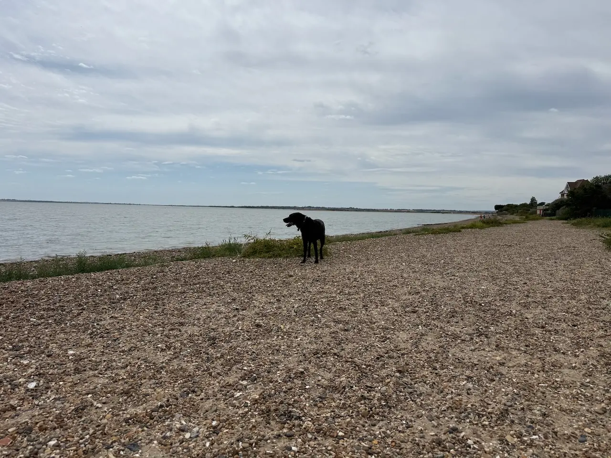
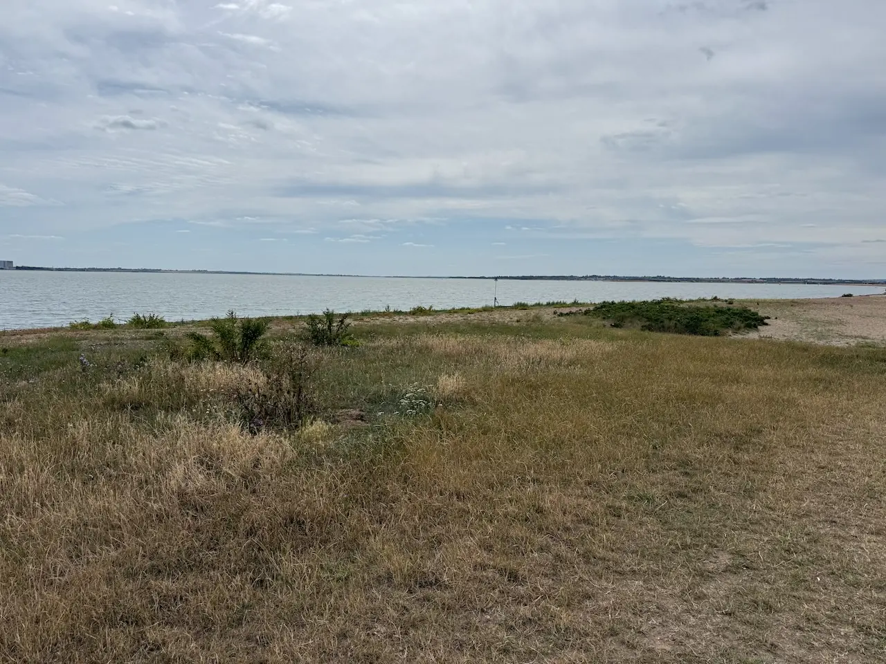
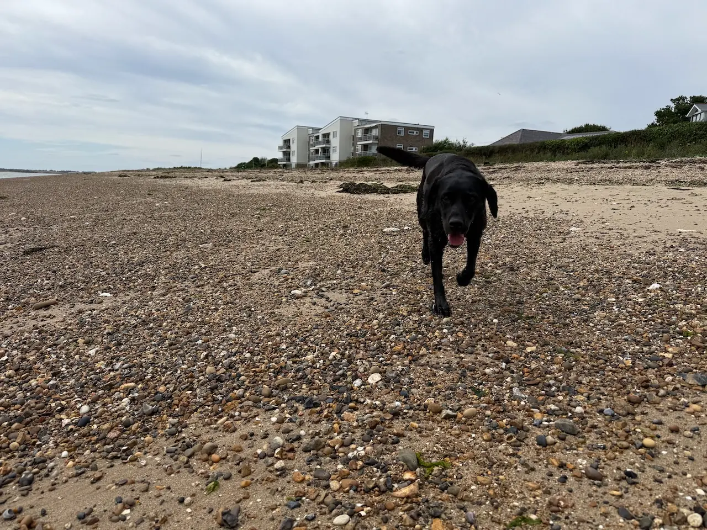
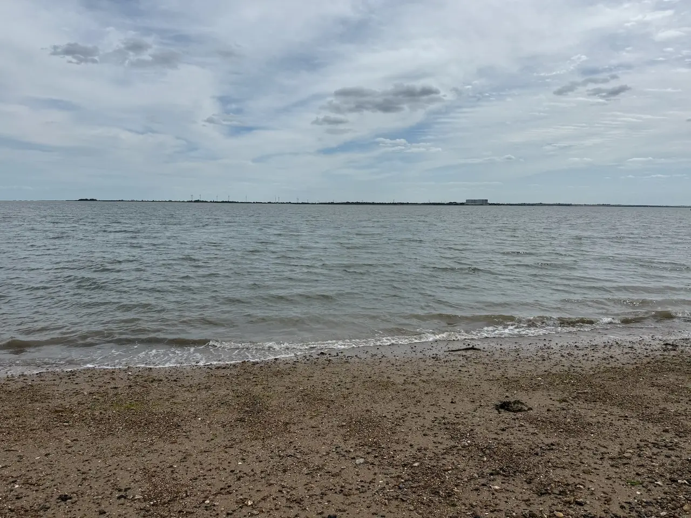
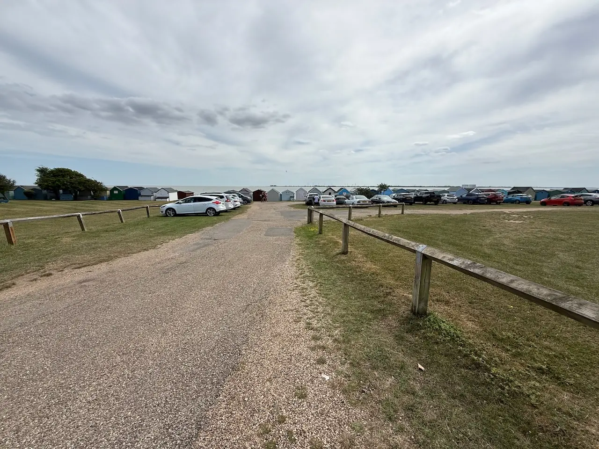
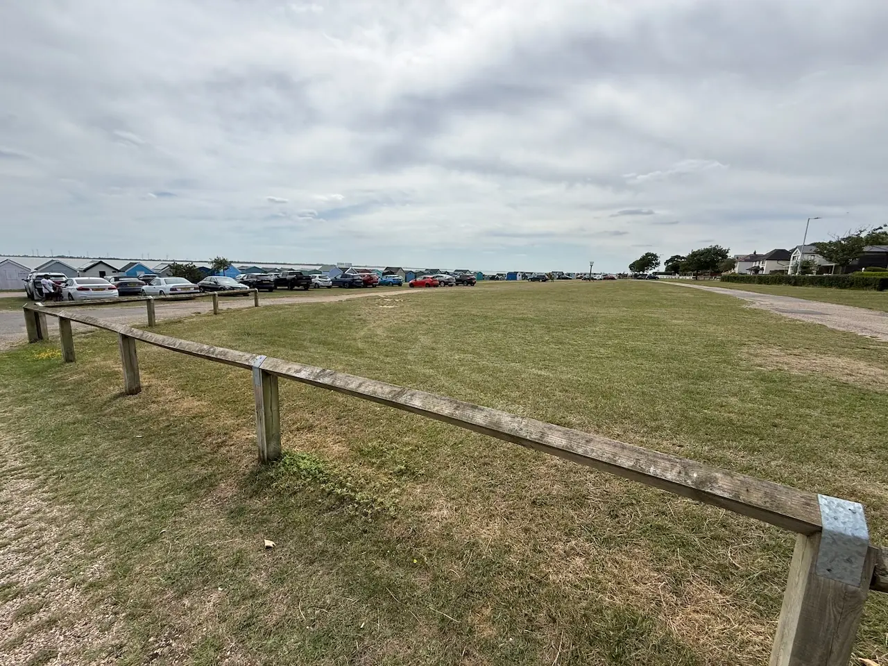

The 'Old City' Walk
Best car park: Coast Road
A picturesque seaside town with colourful beach huts, sweeping coastal views and miles of shoreline to explore. West Mersea is perfect for a relaxed dog walk by the sea, with plenty of dog-friendly cafés, pubs and beaches nearby.
Local tip: Watch out for the tide times to avoid getting stranded in Mersea until low tide.
Honest ratings, so you can decide in seconds whether it suits your dog.
How we rate this
How we rate this
How we rate this
How we rate this
How we rate this
How we rate this
How we rate this
How we rate this
See what it actually looks like before you go.







Best car park: Coast Road
Best car park: Coast Road
Best car park: Coast Road
Best car park: Victoria Esplanade
Best car park: The Fox Inn
Best car park: The Fox Inn
Parking & directions. There are several parking options around West Mersea. The two main seafront car parks can fill up on warm days, so arriving early is recommended.
Right on the seafront and the closest parking for the beach and Esplanade.
★ RecommendedA short walk from the seafront. A good alternative when Victoria Esplanade is full.
Best for the western walks and access near the Strood.
Ideal for the eastern end of the island, Waldegraves and the vineyard.
Click a car park above to open it in Google Maps
Already heading to Mersea? Here's what other local dog owners pair with this walk.
A traditional tea room set within the historic Wilkin & Sons jam factory, serving hearty breakfasts, classic lunches, cream teas and homemade favourites alongside the story of Tiptree's famous jam-making heritage.
A dog-friendly café at Tom's Farm Shop serving traditional breakfasts, homemade cakes and its speciality smoked menu.
A dog-friendly village pub with cosy open fires, quality food and easy access to the surrounding Essex countryside and walking trails.
The Red Dog is a quality burger and breakfast restaurant based in the small village of Inworth, close to Tiptree, Feering and Kelvedon.
Other dog-friendly walks within easy reach of West Mersea.
From local dog owners who've walked it.
★ This walk doesn't have any community tips yet.
Know something that would help another dog owner?
Have you spotted something we've missed?
We'd love your help keeping Dogs of Essex accurate and up to date.